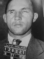

Hiçbir şey Amerikan kamuoyunu 1932 yılında Charles Lindbergh’in (1902–1974) bebeğinin kaçırılıp öldürülmesi kadar etkilememişti. Aralarında hizmetçinin, dadının ve mafya üyelerinin de bulunduğu düzinelerce şüpheli yüzyılın suçu olarak değerlendirilen olay kapsamında sorgulanmıştı. Ancak en sonunda Amerika’nın en ünlü pilotunun çocuğunu öldüren kişinin, Bruno Hauptmann (1899–1936) adında bir Alman göçmen olduğu ortaya çıktı.

Hauptmann elektrikli sandalyeye giderken bile masum olduğunu iddia ediyordu. 1923 yılında ABD’ye gelen Alman bir I. Dünya Savaşı gazisiydi. Bronx’a yerleşmiş, garson bir kızla evlenmişti. Bebeğin kaçırıldığı sıralarda marangoz olarak çalışıyordu.
1 Mart 1932 gecesi dadı, Charles A. Lindbergh Jr. (1930–1932) isimli bebeğin beşiğinde olmadığını fark etti. Pencere eşiğine el yazısı ile 50 bin dolar fidye talep eden bir not bırakılmıştı. Hemen yanında el yapımı bir merdiven bulundu.
1927 yılında Atlantik’i geçmesinin ardından ulusal bir kahraman haline gelen Lindbergh, birkaç gün sonra fidyeyi 70 bin dolara yükselten ikinci bir not aldı. Bebek ve kaçıran kişinin ülke çapında aranmasına ise çoktan başlanmıştı. Sonunda Lindbergh, 2 Nisan’da aracılık yapan üçüncü bir şahıs üzerinden 50 bin dolarlık fidyeyi ödedi.
Ancak bebek ölmüştü. Çürümeye başlayan bedeni Lindbergh’in evinin 8 km kadar uzağında 12 Mayıs’ta bulundu. Böylece araştırma bir cinayet soruşturmasına dönüşmüş oldu.
Hauptmann iki yıl sonra yakalandı. New York City’deki Lexington Bulvarı’nda bir benzin istasyonunda kullandığı kağıt paranın seri numarası fidye karşılığı verilen paralardan birinin seri numarası ile aynıydı. Polisler Hauptmann’ın evini aradılar. Garajda 13 bin dolarlık fidye parası bulundu. El yazısı uzmanları notlardaki yazı ile Hauptmann’ın yazısını karşılaştırdılar.
Yargılama 1935 yılında başladı ve beş hafta sürdü. Hauptmann parayla dolu ayakkabı kutusunun bir başkasına ait olduğunu söyledi. Buna rağmen jüri onu suçlu buldu. Ertesi yıl idam edildi. Dul eşi Anna (1899–1994) hayatının kalan kısmında kocasının itibarının iade edilmesi için uğraştı.
Ek Bilgiler
1- Soruşturmalar sırasında New Jersey Eyalet Polisi’nin başında Norman Schwarzkopf (1895–1958) vardı. Oğlu General H. Norman Schwarzkopf Jr. (1934–), Körfez Savaşı sırasında Amerikan güçlerini kumanda edecekti.
2- Anne ve Charles Lindbergh’in beş çocukları daha oldu. Anne doksan dört yaşına kadar yaşadı.
3- 1976 yapımı “The Lindbergh Kidnapping Case” (Lindbergh Kaçırılma Hadisesi) filminde Hauptmann, Anthony Hopkins (1937–) tarafından canlandırılmıştı.